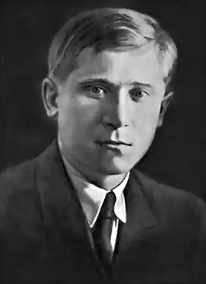

Народився 6.12.1907 р. в с. Горбове на Чернігівщині. Рано почав читати. У 1921 р. вступив до Новгород-Сіверської семирічної школи. Після закінчення школи М. Скуба вступив до Київського кооперативного інституту. Опісля переїхав до Харкова, працював у газетах і видавництвах. У 1931–1932 рр. служив в армії у Дагестані.
У 1933 р. М. Скуба знову в Києві. Працює у видавництві "Молодий більшовик". Належав до літературних організацій "Молодняк" та "Нова генерація".
З 1925 р. вірші М. Скуби з'являються на сторінках газет і журналів "Комсомолець України", "Молодий більшовик", "Глобус", "Молодняк". Видав збірки поезій "Перегони" (1930), "Демонстрація" (1931), "Пісні" (1934), "Нові пісні" (1935). У 1937 р. підготував збірку "Сопілка", але поета арештували і книжка не вийшла. Заарештували М. Скубу 12.09.1937 р., а вже 23.10.1937 р. його засудили до розстрілу. Вирок виконали у Києві 24.10.1937 р.